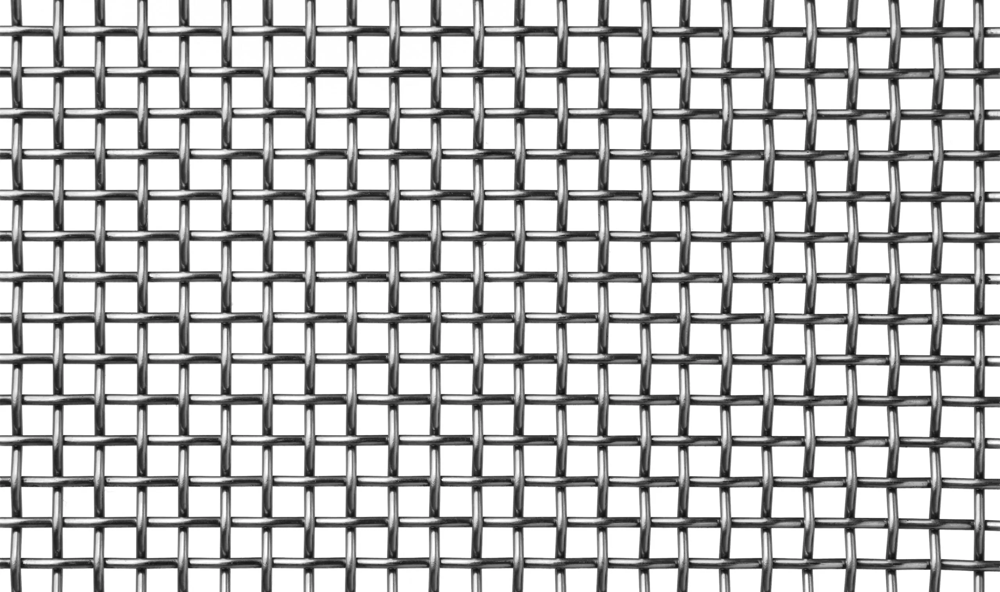
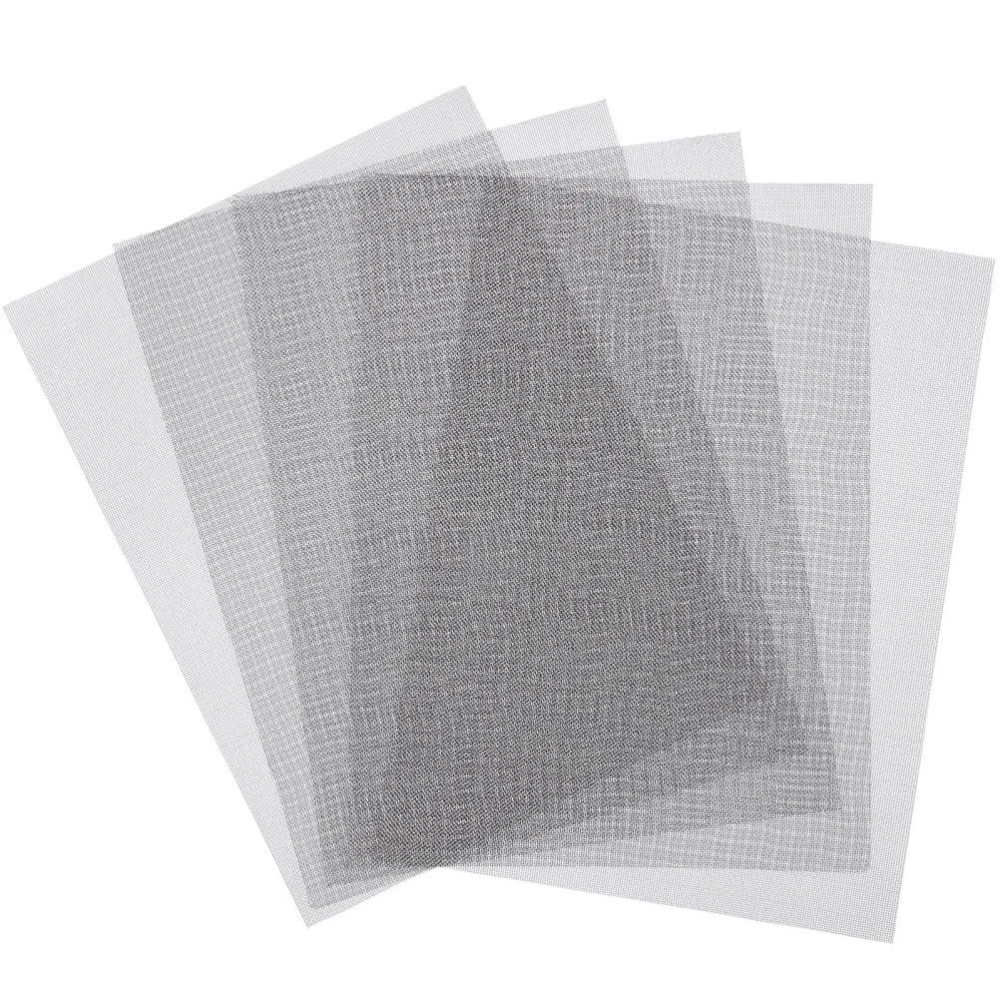

Introduction
Stainless steel woven wire mesh is a commonly used material in modern industry, playing a key role in countless applications from simple screening to complex high-pressure filtration systems. Its performance depends not only on the stainless steel grade but also on the weaving pattern. The two most common weaving patterns are plain weave and twill weave. Understanding the differences between these two patterns is essential for engineers, procurement professionals, and project managers who need to select the optimal wire mesh for their specific application requirements.
Understanding Weave Patterns
The weave pattern determines how wires cross over and under each other. This fundamental structural characteristic affects every aspect of the mesh performance, including:
- Mesh stability -- the ability to maintain shape and aperture size under mechanical stress
- Maximum achievable mesh count -- the number of openings per linear inch that can be practically manufactured
- Filtration precision -- the consistency and minimum size of particles that can be captured
- Flexibility and formability -- how easily the mesh can be bent, shaped, or molded into cylindrical filter elements
- Load distribution -- how forces are transmitted across the wire intersections
- Appearance -- the visual texture and surface pattern of the finished mesh
Each of these factors plays a critical role in determining whether plain weave or twill weave is the better choice for a given application. The following sections provide a detailed comparison across all major performance criteria.
Plain Weave Structure
In plain weave, each warp wire alternately passes over and under each weft wire, forming a symmetrical, regular grid with square openings where warp and weft wire diameters are typically the same. This is the simplest and most widely used weaving pattern in the wire mesh industry, accounting for the majority of woven wire mesh production worldwide.
The plain weave pattern creates a stable, rigid structure with well-defined square apertures. Each wire intersection involves a single over-and-under crossing, which means the wires lie in essentially the same plane. This planar geometry gives plain weave mesh its characteristic flat surface and uniform appearance. The simplicity of the weave also means that plain weave mesh can be produced efficiently on standard looms with relatively high weaving speeds, making it the most cost-effective option for many applications.
Plain weave is typically specified for mesh counts ranging from 1 mesh to approximately 400 mesh, depending on the wire diameter used. At higher mesh counts, the wire diameters become extremely fine, and the structural rigidity of the plain weave pattern becomes a limiting factor in both manufacturing and application performance.

Twill Weave Structure
In standard twill weave, one warp wire passes over two consecutive weft wires then under two consecutive weft wires, forming a staggered "2-over-2-under" pattern. The next row shifts one weft wire to the left, creating the characteristic diagonal line that is the hallmark of twill weave patterns. This diagonal texture is visually distinctive and immediately differentiates twill weave from the straight grid pattern of plain weave.
The twill weave pattern allows wires to be packed more densely than plain weave, which is why twill weave is the preferred pattern for fine mesh counts typically ranging from 200 mesh to 635 mesh and beyond. The staggered crossing pattern distributes the wire crossings more evenly across the mesh surface, reducing the stress concentration at any single intersection point. This results in a stronger, more flexible fabric that can withstand higher mechanical loads and more demanding operating conditions.
The ability to use heavier wire diameters at a given mesh count is another significant advantage of twill weave. In plain weave, increasing the wire diameter at a high mesh count quickly leads to a situation where the wires cannot physically cross over and under each other. Twill weave overcomes this limitation by allowing each wire to span two openings before crossing, which provides the additional space needed for heavier wire diameters.

Mechanical Strength and Durability Comparison
The mechanical properties of wire mesh are directly influenced by the weave pattern, and the choice between plain weave and twill weave can have significant implications for the structural performance of the finished product.
Plain weave offers excellent dimensional stability due to its symmetrical over-and-under pattern. Each wire is locked in place by the crossing wires, creating a rigid structure that resists deformation under static loads. This makes plain weave an ideal choice for applications where the mesh must maintain its shape and aperture size over time, such as architectural screens, vibrating screen panels, and static filtration elements. The uniform stress distribution across all wire intersections ensures consistent performance across the entire mesh surface.
Twill weave excels under dynamic loads, vibration, and pressure differentials. The staggered crossing pattern provides greater flexibility and allows the mesh to absorb mechanical energy without permanent deformation. This makes twill weave the preferred choice for applications involving pulsating flow, backwashing, or mechanical agitation, such as pressure filter elements, centrifuge screens, and hydraulic filter cartridges. The enhanced flexibility of twill weave also makes it easier to form into cylindrical shapes for filter elements without cracking or breaking the wires.
Filtration Precision and Particle Retention
Filtration performance is one of the most critical selection criteria for wire mesh, and the weave pattern has a direct impact on both filtration precision and particle retention characteristics.
Plain weave filtration is based on geometric aperture size, which provides highly predictable particle capture characteristics. The square openings allow for straightforward calculation of the maximum particle size that can pass through the mesh, making plain weave ideal for applications where precise size classification is required. The flat surface of plain weave mesh also facilitates uniform cake formation during filtration, which can improve overall filtration efficiency over time.
Twill weave uses heavier wires to form tighter meshes at the same nominal mesh count, resulting in improved particle retention compared to plain weave at equivalent specifications. The overlapping wire pattern creates a tortuous flow path that enhances particle capture through both direct interception and inertial impaction. Twill weave also provides improved anti-clogging characteristics, as the diagonal wire pattern disrupts the formation of bridge structures that can block plain weave openings. These properties make twill weave the superior choice for micro-filtration applications, particularly in the pharmaceutical, chemical, and food processing industries where sub-micron particle retention is required.
Manufacturing Complexity and Cost
The manufacturing process and associated costs differ significantly between plain weave and twill weave, which is an important consideration for projects with tight budget constraints.
Plain weave requires simpler loom action, as each wire follows a straightforward over-and-under path. This results in shorter production cycles and higher output rates per loom. The simpler setup also means less specialized tooling is required, and the learning curve for operators is shorter. These factors combine to make plain weave the more economical choice for standard applications where the performance advantages of twill weave are not required.
Twill weave demands more complex loom setup and slower weaving speeds due to the 2-over-2-under pattern that requires more precise wire positioning and tension control. The production rate for twill weave is typically 30 to 50 percent lower than plain weave for the same mesh specification, depending on the mesh count and wire diameter. Additionally, the quality control requirements for twill weave are more stringent, as any deviation in the weaving pattern can result in non-uniform apertures or visible defects in the diagonal line pattern. These factors contribute to a higher unit cost for twill weave mesh, typically ranging from 20 to 60 percent above the cost of equivalent plain weave mesh.
Pressure Drop and Flow Rate
The relationship between pressure drop and flow rate is a critical consideration in filtration system design, and the weave pattern has a measurable impact on both parameters.
Plain weave produces a lower pressure drop across the mesh due to its open, square aperture geometry. The straight-through flow path minimizes flow resistance, resulting in higher volumetric flow rates at a given pressure differential. This makes plain weave the preferred choice for applications where maximizing flow rate is the primary objective, such as intake screens, gravity-fed filtration systems, and ventilation guards. The lower pressure drop also translates to reduced energy consumption in pump-fed systems, which can result in significant operational cost savings over the life of the installation.
Twill weave inherently produces a higher pressure drop due to the more tortuous flow path created by the overlapping wire pattern and the smaller effective open area at equivalent mesh counts. However, this higher pressure drop is accompanied by significantly better filtration precision and particle retention. In applications where filtration performance is the primary requirement and the system can accommodate the additional pressure drop, twill weave delivers superior results. The trade-off between pressure drop and filtration efficiency is a fundamental design consideration that must be evaluated on an application-by-application basis.
Surface Treatment and Aesthetics
While functional performance is typically the primary selection criterion, the visual appearance of wire mesh can be an important factor in architectural and decorative applications.
Plain weave presents a clean, symmetrical appearance with its regular grid pattern that is widely recognized and aesthetically pleasing. The uniform, flat surface reflects light evenly and creates a consistent visual texture that architects and designers find attractive for building facades, interior partitions, balustrade infill panels, and decorative screens. Plain weave mesh is available in a wide range of surface finishes, including polished, brushed, matte, and colored coatings, which further expands its design versatility.
Twill weave features a distinctive diagonal pattern that presents a more technical and industrial aesthetic. The diagonal lines create visual interest and a sense of directional flow that can be leveraged in architectural design to create dynamic visual effects. Twill weave is often specified for applications where a more sophisticated or engineered appearance is desired, such as high-end architectural feature walls, industrial equipment enclosures, and premium consumer product components.
Open Area and Porosity
The open area percentage and porosity of wire mesh directly affect flow characteristics, cleaning requirements, and overall filtration performance.
Plain weave typically provides a higher open area percentage at a given mesh count compared to twill weave, due to the simpler wire crossing geometry that leaves more unobstructed space between wires. The smooth, square openings are also easier to clean, as contaminants can be more effectively removed by backwashing, ultrasonic cleaning, or mechanical methods. This makes plain weave the preferred choice for applications where frequent cleaning is required, such as food processing screens, water intake filters, and reusable industrial strainers.
Twill weave has a lower open area percentage at equivalent mesh counts because the overlapping wires form smaller effective gaps between adjacent wires. The more complex geometry also makes cleaning more challenging, as particles can become trapped in the tortuous flow path between wire intersections. However, the tighter pore structure provides superior filtration performance, and the enhanced structural strength of twill weave allows it to withstand more aggressive cleaning methods without damage. For applications where cleaning difficulty is acceptable in exchange for superior filtration, twill weave is the optimal choice.
Application Selection Guide
Choosing between plain weave and twill weave requires careful evaluation of the application requirements. The following guidelines can help streamline the selection process.
Choose plain weave when:
- Absolute dimensional stability is critical to the application
- Cost is the primary driver in the material selection process
- Wear resistance and abrasion tolerance are important requirements
- A simple, robust filter for larger particles is sufficient
- Architectural and design features demand a clean, symmetrical appearance
- Maximum open area and minimum pressure drop are required
- Frequent cleaning cycles are anticipated
Choose twill weave when:
- Micron-level filtration precision is required
- High flow rate through a dense, strong mesh is critical
- A dense, strong mesh is needed for demanding operating conditions
- Flexibility and formability are required for cylindrical filter elements
- Filter cake release characteristics are a primary consideration
- Dynamic loads, vibration, or pressure pulsation are present
- Operating temperatures or chemical environments demand heavier wire construction
When selecting between plain weave and twill weave, always consider the total cost of ownership rather than the initial purchase price alone. A twill weave filter element that lasts twice as long and requires fewer replacements may deliver a lower total cost than a less expensive plain weave alternative, even though the upfront investment is higher.
Conclusion
Both plain weave and twill weave stainless steel wire mesh offer distinct advantages that make them suitable for different applications. Plain weave excels in simplicity, dimensional stability, cost-effectiveness, and ease of cleaning, making it the go-to choice for standard screening, architectural applications, and general-purpose filtration. Twill weave delivers superior strength, finer filtration precision, and better performance under demanding conditions, making it indispensable for high-performance filtration, micro-filtration, and heavy-duty industrial applications.
The key to successful wire mesh selection lies in understanding the specific requirements of your application and matching those requirements to the strengths of each weave pattern. By carefully evaluating factors such as filtration precision, mechanical loading, operating environment, cleaning requirements, and budget constraints, you can ensure that you select the wire mesh product that delivers optimal performance and the best value over its entire service life.
For expert guidance on selecting the right weave pattern for your application, or to request a custom quote, contact our technical team today. We offer comprehensive engineering support and can supply both plain weave and twill weave stainless steel wire mesh in a wide range of materials, mesh counts, and wire diameters to meet your exact specifications.
Looking for the right weave pattern for your application? Contact our team for expert guidance and competitive pricing. Request a Quote